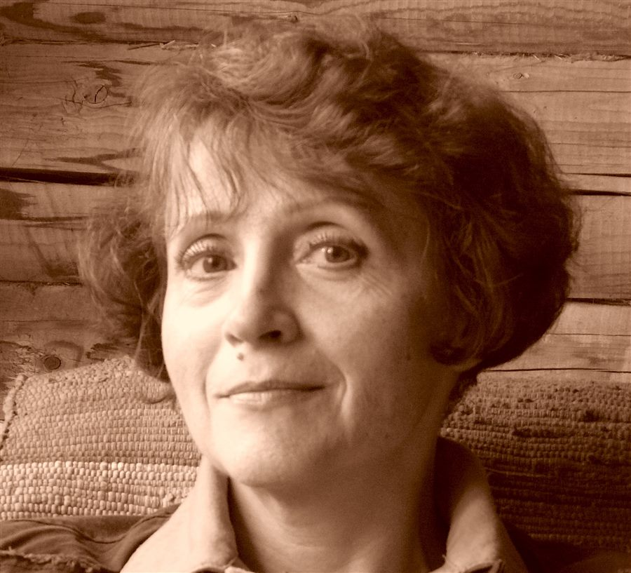

Обо мне
Меня зовут Анна. Я семейный психолог и психотерапевт — уже восемь лет помогаю парам и родителям находить путь друг к другу, даже когда кажется, что говорить больше не о чем.
В профессию я пришла через собственный опыт: когда-то мне самой помогла семейная терапия, и я поняла, что хочу уметь то же, что умел тогда мой терапевт. С тех пор многое изменилось, но главное осталось — я верю, что близость можно возвращать.
Мои клиенты говорят, что на сессиях со мной спокойно и безопасно: я не ищу виноватых и не даю готовых рецептов. Вместо этого я помогаю услышать настоящие чувства — свои и близкого человека.
Образование и подготовка
- 2016 МГУ имени М. В. Ломоносова, факультет психологии, клиническая психология
- 2018 Сертификация по эмоционально-фокусированной терапии (ЭФТ), ICEEFT
- 2020 Специализация «Системная семейная психотерапия», Институт практической психологии
- 2021 Курс «Работа с парами после предательства»
- 2023 Регулярная супервизия и личная терапия — непрерывно
Как я работаю
- Без оценок. Моя задача — не понять, кто прав, а помочь вам снова быть на одной стороне.
- Конфиденциально. Всё, что звучит на сессии, остаётся между нами. Без исключений.
- Научно. Работаю методом эмоционально-фокусированной терапии — его эффективность подтверждена десятками исследований.
- В вашем темпе. Никакого давления: двигаемся настолько быстро, насколько вам комфортно.
Хотите познакомиться и понять, подхожу ли я вам?
Записаться на консультацию